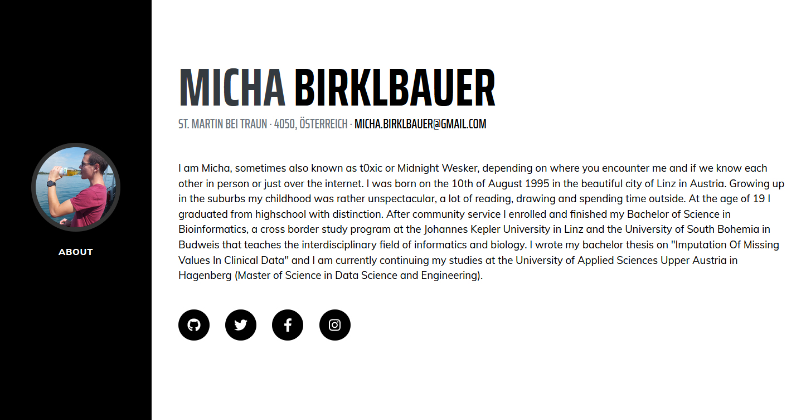

HTML mit Micha - Teil II
Willkommen zurück meine verehrtesten Webentwickler & Webentwicklerinnen! Liebe Tanja!
Für heute hätte ich mir vorgenommen zu zeigen wie man einen Lebenslauf in HTML aufsetzt. Warum? Weil sowas für normal recht gut ankommt und außerdem kann man so schnell auf vergangene Arbeiten und Auszeichnungen hinweisen.
Grundsätzlich würd ich dir diesbezüglich auch empfehlen dir einen guten Editor zu besorgen, ich verwende zum Beispiel Atom und kann den sehr empfehlen. Herunterladen kannst du den Editor unter
atom.io.
Außerdem werd i da jetzt ah riesen Geheimnis verraten: So gut wie niemand baut sich heutzutage seine Websiten von Grund auf selbst, man verwendet so gut wie immer ein Template und erweitert das dann bzw. passt es an die
eigenen Bedürfnisse an. Ich hab mir für den Lebenslauf von startbootstrap auch schon eine Vorlage besorgt und die bisschen angepasst, sodass sie mir
besser gefällt.
Die angepasste Vorlage von mir kannst du dir hier runterladen: template.zip
Um bissl auf den Geschmack zu kommen, die Vorlage sieht im Browser ungefähr so aus:
Wir werden jetzt die HTML-Datei einfach Zeile für Zeile durchgehen und schauen was wir ändern müssen. Aber bevor wir des machen, brauchen wir nu ein Bild - normalerweise von uns selbst - das wir quasi als Profilbild auf der Seite
verwenden. Dazu kannst du irgendein Bild hernehmen, benennst es um in profile.jpg und kopierst es in den img Ordner.
Als nächstes müssen wir eh schon die index.html Datei in unserem Editor öffnen und bearbeiten. Zuerst schauen wir uns mal den Header an und ändern dort die Titel, Beschreibung und Metadaten:
Vorher:
Nachher:
Zweitens müssen wir die Navigationsleiste auf der linken Seite anpassen. Dort müssen wir zum einen unseren Namen eintragen und zum anderen die Einträge bearbeiten, falls wir mehr als einen Abschnitt in unserem
Lebenslauf haben wollen. Da ich das Ganze eher kurz halten will, belass ich's bei dem einen Abschnitt.
Vorher:
Nachher:
Drittens und letztens müssen wir unseren Lebenslauf noch mit Inhalten befüllen:
Vorher:
Nachher:
Das Endergebnis sieht dann im Browser etwa so wie im folgenden Bild aus. Mir gefällt's!
 Sreenshot der angepassten Vorlage im Browser.
Die Seite kann außerdem über diesen Link abgerufen werden.
Und das war's eigentlich auch schon wieder mit HTML mit Micha - Teil II. Ich hoffe es war zumindest etwas hilfreich! Bis zum nächsten Mal! ;)
PS: Eine erweiterte Version mit mehreren Abschnitten ist über diesen Link abzurufen. Die Vorlage gibt's
hier zum downloaden. War mein erster Versuch der mir dann allerdings nicht so gefallen hat, vorallem weil ich viel
Blödsinn geschrieben hab! :P